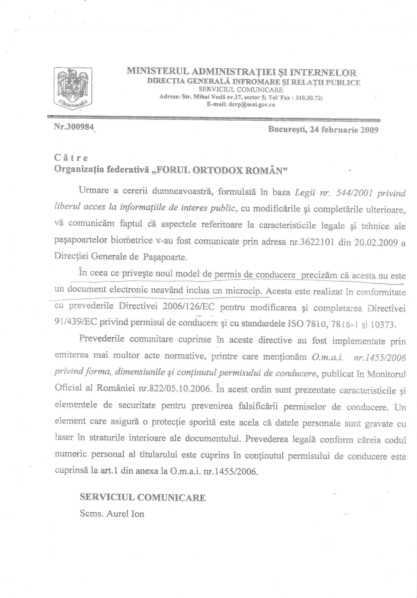

În ultima vreme, în România, problema actelor cu microcipuri a luat o amploare ieșită din comun. Emisiuni, articole, polemici. Și multă, foarte multă manipulare.
Spun asta pentru că am fost, la rândul meu, manipulat, și i-am manipulat pe alții. Rândurile mele nu sunt o cerere de iertare, deși pot fi înțelese și astfel. Ele sunt o chemare la mai multă atenție, într-o vreme în care mulți vor să ne manipuleze. Voi arăta aceasta foarte simplu, făcând referire la noile carnete de conducere. Carnete care nu au cip. Da, nu au cip. Și voi argumenta în acest articol de ce nu au.
Dar, mai întâi, câteva referiri la sursele de informații care și-au permis să ducă în eroare un mare număr de oameni.
Cea mai cunoscută luare de poziție îi aparține Comisarului șef Dănuț Ciubotaru – șef serviciu permise și înmatriculări, care, într-un interviu difuzat la o emisiune TV, a declarat: „Acest permis conține un cip căruia oricând putem să-i modificăm termenul de valabilitate administrativ” (http://apologeticum.wordpress.com/2009/02/26/permisul-de-conducere-are-microcip-confuzie-in-institutiile-statului/). Cine putea ști mai bine dacă permisul conține sau nu cip decât unul dintre șefii serviciului permise și înmatriculări?
O anumită afirmație din emisiunea respectivă ar fi putut pune însă semne de întrebare telespectatorilor, cea în care comisarul afirma despre noul carnet de conducere că „este imposibil de contrafăcut”. E absurd să afirmi că e imposibil de falsificat un act, doar pentru că are microcip, întrucât există multe materiale care arată cât de simplu se poate clona un astfel de microcip…
O poziție oficială a M.A.I. a fost făcută publică în răspunsul către Forul Ortodox Român: „În ceea ce privește noul model de permis de conducere, precizăm că acesta nu este un document electronic, neavând inclus un microcip” (http://rafaeludriste.blogspot.com/2009_02_01_archive.html – documentul scanat se găsește pe http://apologeticum.wordpress.com/2009/02/26/permisul-de-conducere-are-microcip-confuzie-in-institutiile-statului/).

Trebuie spus că, înaintea acestui răspuns oficial, au existat multe materiale legate de cipurile din carnetele de conducere. Cea mai veche știre pe această temă este mai veche de patru ani: „Astăzi (19 ianuarie 2005) Comitetul pentru Transporturi din cadrul Parlamentului European a aprobat noul format standard pentru carnetele de șoferi.
Permisul va avea aceeași formă ca și cartea de credit și va avea aceeași perioadă de valabilitate în toate țările membre UE. El va putea include un microcip cu informații despre posesor. Crearea unei noi legislații comunitare în domeniu are drept scop combaterea fraudelor ce au loc cu ajutorul documentelor auto. O altă țintă a schimbării reglementărilor este dată de creșterea siguranței rutiere” (www.europeana.ro/stiri/Acelasi carnet de conducere pentru toti cetatenii UE19012005.htm – www.europeana.ro este continuatorul www.uniuneaeuropeana.go.ro, unul dintre cele mai importante site-uri de informații legate de Uniunea Europeană).
Din 2005 până în 2009 s-au făcut multe speculații privitoare la noile carnete de conducere. Iată câteva materiale: „Permisele auto vor avea un format unic în toate statele UE – Noile carnete de conducere vor avea încorporate microcipuri, care vor permite actualizarea datelor sau a fotografiilor conținute, precum și adăugarea, în mod periodic, a elementelor de securitate, vor avea termen de valabilitate administrativă de zece ani, iar statele membre ale UE vor putea extinde această perioadă până la 15 ani. Începând din 2013, toate permisele de conducere din Uniunea Europeană vor avea un format unic, înlocuind cele peste 110 modele de astfel de documente utilizate în acest moment în statele membre, schimbarea acestora urmând să fie făcută până în anul 2039. Potrivit unui comunicat al Parlamentului European, noile carnete de conducere vor avea încorporate microcipuri, care vor permite actualizarea datelor sau a fotografiilor conținute, precum și adăugarea, în mod periodic, a elementelor de securitate. Noile permise de conducere vor avea termen de valabilitate administrativă de zece ani, iar statele membre ale UE vor putea extinde această perioadă până la 15 ani” – (www.topbusiness.ro/romania/archive/article/Permisele+auto+vor+avea+un+format+unic+%EEn+toate+statele+UE.html).
În presă au apărut diferite articole care spuneau același lucru: „Documentul, un card de plastic colorat în albastru și galben în care va fi încorporat un microcip, va conține câteva rubrici noi. Potrivit unui comunicat al Parlamentului European, microcipurile vor permite actualizarea datelor sau a fotografiilor conținute, precum și adăugarea, în mod periodic, a elementelor de securitate. (www.monitorulbt.ro/National/2008-09-25/Noii+soferi+vor+primi+permise+cu+microcip).
Posturile de radio au preluat știrea: „Noul permis își va schimba și înfățișarea: va fi un card de plastic colorat în albastru și galben, va conține câteva rubrici noi și va avea încorporat un microcip de identificare. El va fi eliberat cel mai devreme în noiembrie 2008 și cel mai târziu în martie 2009” (www.radiofavoritfm.ro/2008/09/23/noile-carnete-de-conducere-apar-in-romania-in-cel-mult-6-luni/).
La fel au făcut și unele posturi TV: „Noul permis își va schimba și înfățișarea: va fi un card de plastic colorat în albastru și galben, va conține câteva rubrici noi și va avea încorporat un microcip de identificare”.
Datorită acestor informații, mulți creștini din România au declarat că vor refuza noile carnete de conducere. Datorită acestor informații, la rândul meu am sfătuit – în emisiuni radio/tv sau conferințe – ca oamenii să refuze noile carnete de conducere.
Totuși, poziția afirmată M.A.I. pe 24 februarie 2009 era clară: noile carnete nu conțin microcipuri. De unde știu că afirmația nu este mincinoasă? Datorită faptului că am luat legătura – direct sau indirect – cu oameni care lucrează în sistem. Oameni care mi-au confirmat că noile carnete de conducere nu conțin microcipuri. Poate că și ei mințeau… Dar am vorbit cu oameni care au făcut experimente, folosind pe post de cobai noile carnete de conducere. Rezultatul este același. Nu există niciun cip în carnete.
Atunci, ce să spunem despre experimentul filmat, care a fost difuzat pe mai multe posturi TV, în care se vede cum explodează cipul din carnetul de conducere într-un cuptor cu microunde? Nu explodează cipul, ci pur și simplu banda magnetică se dilată până ce flama dă aparența unei explozii. Au mințit părinții care au făcut experimentul cu cuptorul cu microunde? Nu, nu au mințit. Ei au fost doar manipulați, pornind de la premisa că cipul se află în carnet, și au pus flama pe seama cipului.
Cine citește acest articol se poate gândi: dar dacă Danion Vasile manipulează, pentru a-i convinge pe oameni să primească carnetele de conducere cu cip-uri? E bine ca oamenii să își pună o astfel de întrebare. Și să caute să se lămurească, cercetând problema cât mai bine…
Iată o mărturie, primită de la o persoană de încredere, care a fost de față la un experiment cât se poate de grăitor:
„Vă prezint, pe scurt, ce demersuri am făcut împreună cu doi părinți pentru a afla ceva concret și incontestabil adevărat. În urmă cu o săptămână am primit un permis auto nou de sacrificiu. Am fost împreună cu cei doi părinți la un specialist IT, fizician totodată – și care făcuse o scanare a permisului cu câteva zile mai înainte, numai în prezența părintelui X –, demonstrându-i că permisul NU are cip. De această dată, ne-a arătat la toți trei permisul în sursa puternică de lumină și, cu excepția hologramei, toată suprafața permisului este transparentă. Mai mult, la sugestia părintelui Y că cipul ar fi sub hologramă, a răzuit cu un bisturiu pelicula metalică, foarte subțire de altfel, și dedesubt nu se vede nicio suprafață opacă. Așadar, printr-o cercetare vizuală în sursa de lumină puternică, e clar că nu există nimic vizibil cu ochiul liber. Pentru că permisul era în posesia mea, după ce am ajuns acasă am pus permisul în cuptorul cu microunde. Nu s-a întâmplat nimic! Pentru a mă convinge, am pus în cuptor și un card RATB, care știți că are un cip prin care se validează cardul la urcarea în mijlocul de transport. Nu a făcut numai poc, ci o flamă deosebit de puternică și probabil ar fi luat foc dacă îl lăsam mai mult. Am descoperit și zona cipului de pe cardul RATB. Având și eu pregătire tehnică, îmi dau seama că aceste argumente sunt suficiente pentru concluzia că permisul auto nu este document electronic, dar am stabilit cu părintele X să filmez tot ce fac cu permisul și să încerc să merg cu el pentru o scanare pe care, de asemenea, să o filmez. Acestea sunt faptele. Ceea ce mă întristează pe mine foarte mult este faptul că ne-am lăsat cu multă ușurință manipulați; mai mult, am turnat gaz pe foc cu acel filmuleț, «dovada microcipului» în permisul auto. Poate nu ar fi fost lipsit de folos să fi vorbit cineva cu d-l comisar șef de la Botoșani – cum de nu a observat nimeni că nu e nici măcar din București? – sau să fi cerut și sfatul unui expert în tehnica microcipurilor. Dar sugestiile sunt lipsite de sens acum. Iertați-mă, vă rog, pentru îndrăzneală; eu nu sunt decât un creștin născut ortodox în urmă cu mai bine de 50 de ani, dar cu trăire ortodoxă de doar un an. Nu am educație și cultură teologică, sunt abia la grădiniță în cateheza ortodoxă, dar sufăr foarte tare când constat că uneori oamenii cu bune intenții, dar mai puțin atenți la cuvântul rostit, pot să genereze tocmai ceea ce se dorește: confuzie printre credincioși, neîncredere în duhovnici, dezbinare și mai ales, o cumplită spaimă că nu mai știm dacă drumul pe care mergem este cel spre mântuire sau cel spre iad. Dumnezeu să ne ajute luminându-ne, înțelepțindu-ne și călăuzindu-ne pașii și mai ales cuvintele către rostirea adevărului. Încă o dată vă rog să mă iertați pentru îndrăzneală. Doamne, ajută-ne!”
Am văzut și eu carnetul de conducere respectiv… Mulți vorbesc despre carnetele de conducere fără să fi ținut un astfel de carnet în mână… Eu l-am ținut și m-am convins că nu are cip. Fiind pus în fața unei surse de lumină, se poate vedea ușor că e doar o bucată de plastic, nimic mai mult. Nu are microcip. Dacă ar fi avut, s-ar fi văzut. Dacă ar fi avut, ar fi explodat atunci când era pus în cuptorul cu microunde. Dar, după ce s-a îndepărtat partea cu folia metalică, în cuptorul cu microunde carnetul nu a avut nicio reacție fizică sau chimică.
O părere care s-a bucurat de succes în curentul anti-cip a fost că microcipurile din carnetele de conducere sunt invizibile. Un specialist în micro-cipuri a explicat cât se poate de clar: chiar dacă există cipuri invizibile cu ochiul liber, pentru a fi citite ele au nevoie de un dispozitiv care să primească energia pentru a putea fi citite informațiile respective. Mărimea acestui dispozitiv este direct proporțională cu mărimea distanței de la care poate fi citit cipul. Or, din acest motiv un cip cu un dispozitiv microscopic nu poate fi citit de la distanță, cel puțin nu cele care sunt fabricate cu tehnica actuală…
Cred că ar fi bine ca luptătorii anti-cip să înțeleagă cât mai repede că, deocamdată, nu trebuie să ceară respingerea noilor carnete de conducere. Trebuie ca ierarhii, preoții, teologii, monahii, mirenii, să știe exact cum stau lucrurile.
Cea mai clară dovadă în privința faptului că nu există cipuri în carnetele de conducere ar fi trebuit să fie poziția M.A.I.: „În ceea ce privește noul model de permis de conducere precizăm că acesta nu este un document electronic neavând inclus un microcip” (http://apologeticum.wordpress.com/2009/02/26/permisul-de-conducere-are-microcip-confuzie-in-institutiile-statului/). Neavând însă încredere în stat, nici în reprezentanții săi, unii creștini consideră că poziția aceasta este mincinoasă. Într-o anumită măsură, le dau dreptate.
Oricum, faptul că noile carnete de conducere nu au cipuri nu este pentru mine un semn că vremea pecetluirii apocaliptice e mai departe decât credeam. Dimpotrivă. Manipularea legată de carnetele de conducere dovedește că se încearcă transformarea întregii problematici a actelor de identitate cu microcipuri într-o obsesie mistică a unor fanatici. Altfel, de ce ziarele care au scris despre cipurile din carnetele de conducere nu și-au cerut scuze față de cititorii pe care i-au manipulat?
De ce comisarul Dănuț Ciubotaru nu a fost sancționat de superiorii săi pentru răspândirea de informații false? Întrebările sunt multe. Răspunsurile, greu de găsit…
Note:
1. A apărut ideea cum că, inițial, noile carnete de conducere ar fi conținut cipuri, dar că ulterior s-ar fi renunțat la ele. Într-adevăr, legislația europeană permite includerea microcipurilor în noile carnete de conducere, dar a lăsat la latitudinea fiecărui stat aceasta. În România, deși noile pașapoarte au microcipuri (lucru impus de UE), noile carnete de conducere – nu.
2. A apărut pe un site speculația că microcipul ar fi „conținut” în codul de bare. O idee absurdă, care dovedește o totală necunoaștere a problemei. În privința codului de bare de pe verso-ul carnetului de conducere, trebuie precizat că nu este controversatul cod EAN 13, (European Article Numbering = Numerotarea Europeană a Articolelor), care conține cei trei guarzi cu cifra 6. Este un alt sistem de codare.
3. La o conferință ținută în orașul Piatra Neamț, o judecătoare mi-a trimis un carnet de conducere în care ar fi explodat un cip pus la cuptorul cu microunde. Am întrebat-o pe judecătoarea respectivă – despre care s-a vorbit mult în zonă – ce dovadă are că acolo a fost un cip. Răspunsul a fost că se înnegrise carnetul de conducere în locul în care s-a crăpat pelicula metalică. Aceasta e marea dovadă care i-a convins pe mulți să fugă de carnetele cu bucluc. Când am explicat că pelicula metalică, încălzindu-se, a ars plasticul din care e făcut carnetul, nu mi s-a mai adus niciun contraargument. Totuși, am observat, cu stupoare, cât de ușor se lasă manipulați unii creștini de astfel de justificări ce par superstițioase…
4. Imediat după ce am început să vorbesc cu diverși creștini sau preoți despre faptul că nu există cipuri în noile carnete de conducere, am fost acuzat că dau înapoi de la lupta anti-cip etc. Am considerat că nu am dreptul să tac, lăsând oamenii să fie manipulați. Și cred că este mare vina celor care, deși nu au argumente privitoare la existența cipului în noile carnete, preferă să își apere ideile preconcepute în loc să se raporteze corect la realitate. Și să ducă lupta, cel puțin deocamdată, împotriva noilor pașapoarte, care au cip, și a viitoarelor buletine, care vor avea…